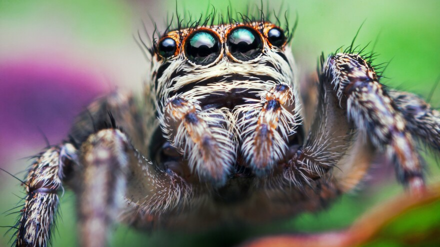

Spiders can be found in a variety of habitats, including forests, grasslands, deserts, and wetlands. Some species are more specialized and live in specific environments, such as caves or near water sources.
Many spiders build webs to catch their prey, and these webs can be found in trees, shrubs, and even on buildings. Some spiders, like the tarantula, live in burrows underground. Others, like the jumping spider, are active hunters that do not rely on webs to catch their prey.
